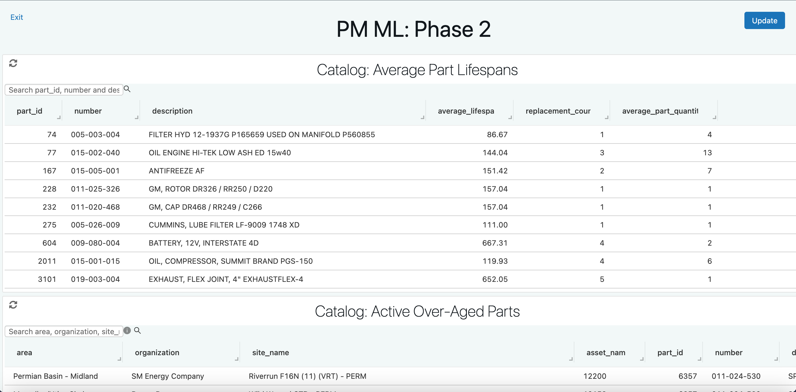
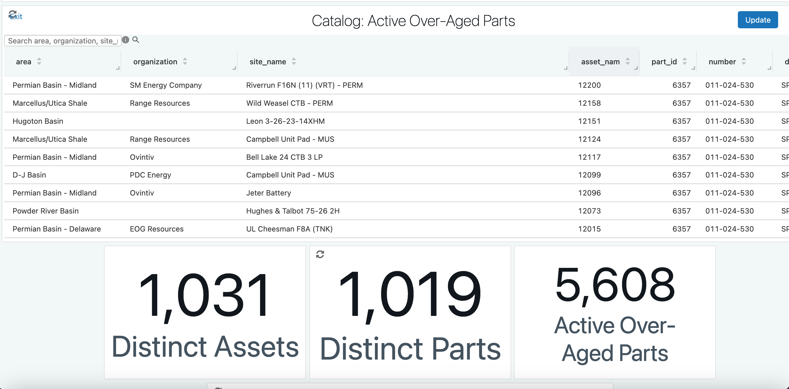
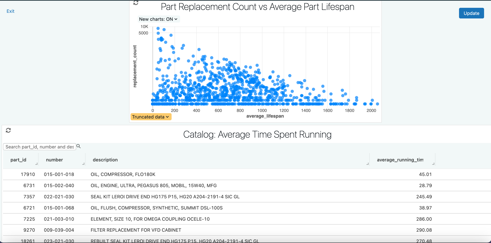
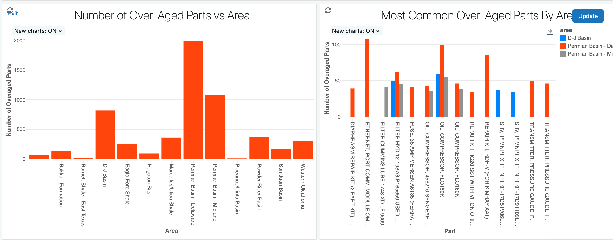
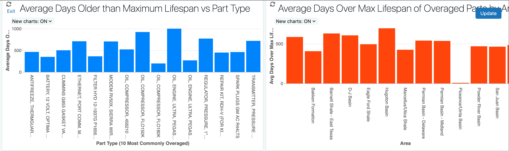
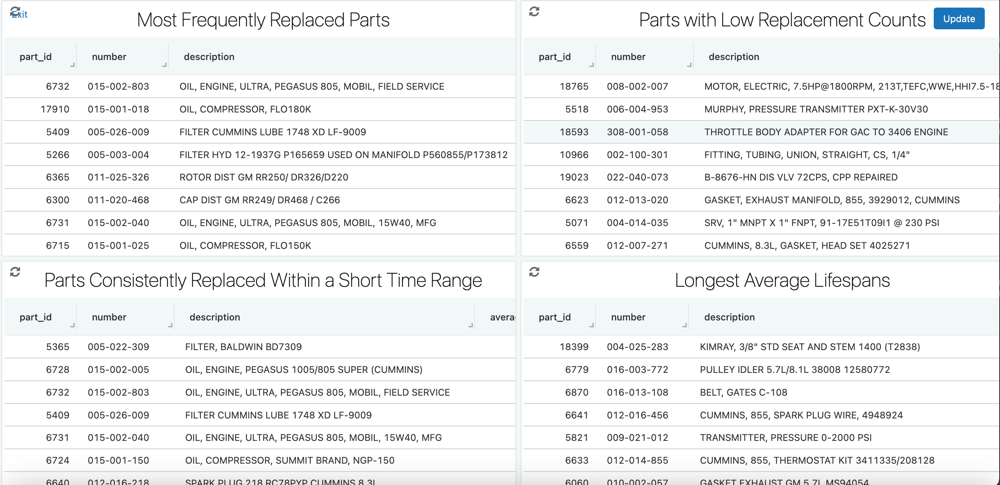
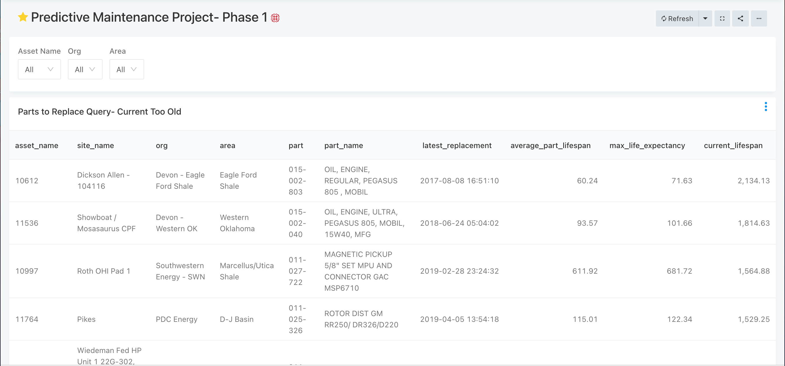
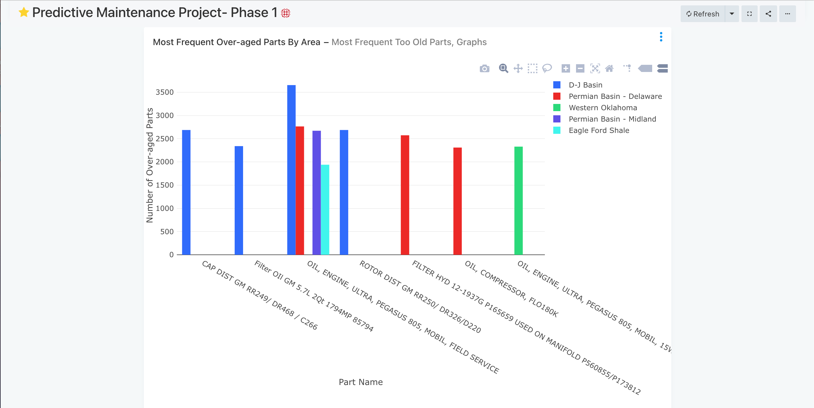
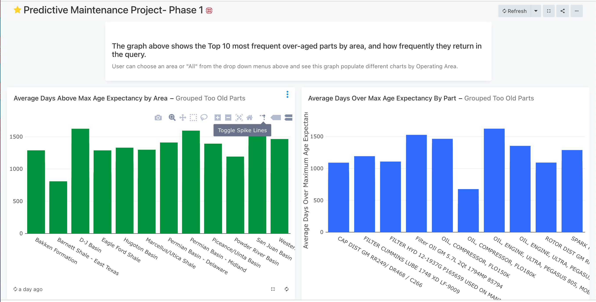
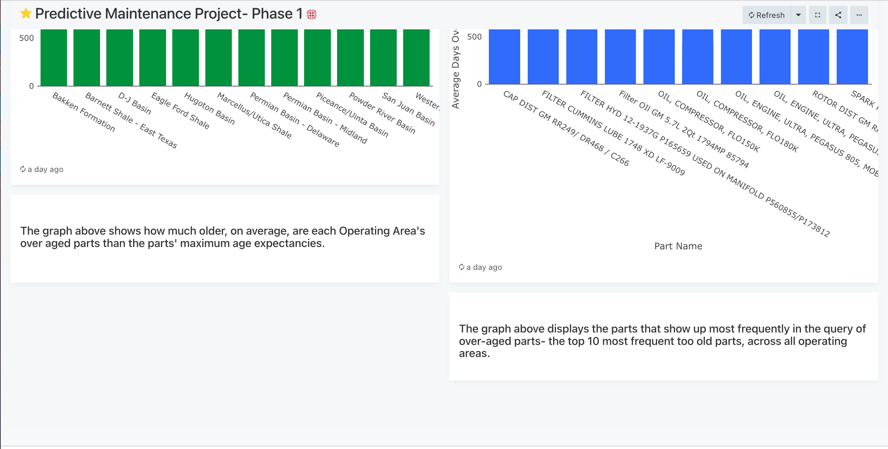

Flogistix: Data Science Intern, March - December 2023
My responsibilities and achievements:
- • Executed the first two phases of Predictive Maintenance Project (Exploration and Initial Analysis)- develop Machine Learning models to predict and preemptively resolve breakdowns on oil compressor units with vapor recovery tanks.
- ◦ Objective is to increase equipment uptime; reducing Flogistix’s labor costs, clients’ methane emissions and lost revenue.
- • Wrote SQL and PySpark scripts based on maintenance work order data to find average part lifespans and subsequent insights, providing executive leadership with actionable information.
- ◦ Identified overaged parts currently in operation.
- ◦ Analyzed lifespan trends between different operating areas.
- ◦ Determined the most frequently replaced parts to optimize procurement.
- • Presented findings to executive leadership and engineering teams with dashboard visualizations in ReDash and Databricks, and enabled further conversations about factors on which to train a future Machine Learning model.
- • Wrote and pushed to production a PySpark script and Directed Acyclic Graph (DAG) that checks Flogistix's data tables and ensures proper population daily via Apache Airflow and Amazon Web Services (AWS).
Databricks Dashboard
After the second phase of the Predictive Maintenance Project, I created a Databricks Dashboard to visually communicate my findings to executive leadership and engineering teams.
The wrangling and analysis behind these visualizations was executed with PySpark.






After the first phase of the Predictive Maintenance Project, I created a ReDash Dashboard to visually communicate my findings to executive leadership and engineering teams.
The wrangling and analysis behind these visualizations was executed with SQL.




About:
Flogistix specializes in Vapor Recovery and Methane Leak Detection.
They manufacture oil compressors with vapor recovery tanks to prevent the byproduct methane from being vented into the atmosphere.
They also perform leak detection studies on oil infrastructure with drones fitted with thermal cameras. Flogistix has a maintenance team to
do routine checkups of compressors and respond to outages and part failures in the field.
Flogistix produces all of its own in-house software systems -
apps that help customers keep track of their compression operations and saved emissions, and the maintenance team organize their field work orders.